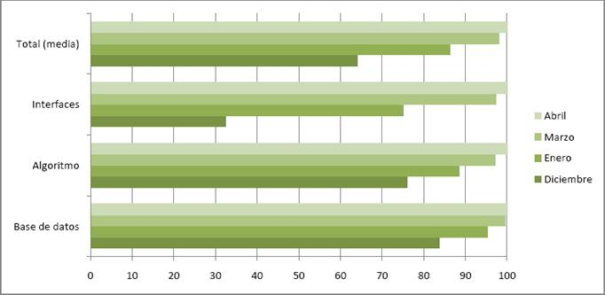

Planificación
Cómo trabajamos
Organización del grupo
El grupo está dividido en tres subgrupos para ocupar las tres grandes áreas de trabajo, la interfaz, la base de datos, y el algoritmo de cálculo de horarios. Cada grupo tiene uno o dos representantes, que se coordinan con el coordinador general para repartir las diferentes tareas.
Organización del proyecto
Intentamos que nuestro trabajo sea lo más modular posible, diferenciando las distintas áreas para evitar posibles conflictos entre tareas. Hemos adoptado un esquema de trabajo modelo-vista-controlador (MVC), en el que el modelo es la base de datos, la vista son los interfaces, y el controlador es la aplicación y conector entre modelo y vista. Nuestra intención es facilitar las tareas de programación a la vez que preparar el proyecto para minimizar las consecuencias de posibles cambios imprevistos. Más información sobre el MVC en http://es.wikipedia.org/wiki/Modelo_Vista_Controlador.
Planificación general
Esta es la planificación general para el proyecto. En la siguiente página se puede ver la planificación desglosada por objetivos para los tres grupos de trabajo que conforman el equipo.
- Antes de Navidad:
- Para el mes de marzo:
- Para el mes de abril:
| Una aplicación que se instale (aplicación + java + base de datos). | HECHO | ||
| Interfaces principales completos adaptados al gestor de idiomas. | HECHO | ||
| Que la aplicación conecte con la base de datos. | HECHO | ||
| Que permita por lo menos dar de alta un empleado, crear un cuadrante a mano y guardarlo. | FALTA | ||
| La parte de generación de informes debe estar ya completa. | FALTA | ||
| Tenemos una idea de cómo se va a hacer el interfaz web, y ya hay un grupo trabajando en ello. | HECHO | ||
| La aplicación ya debe permitir generar cuadrantes básicos automáticamente. | HECHO | ||
| La mensajería está terminada. | FALTA | ||
| La aplicación ya debe permitir generar cuadrantes completos automáticamente. | HECHO | ||
| Los interfaces están completos. | FALTA | ||
| La base de datos está terminada. | HECHO | ||
| El interfaz web está terminado, o casi terminado. | FALTA | ||
| Periodo de pruebas e instalación para los clientes. | FALTA | ||
| Este tiempo será para arreglar fallos y hacer modificaciones que nos pidan los clientes. | HECHO | ||
Planificación por grupos
| Grupo de interfaces | Grupo de base de datos | Grupo de algoritmo | |
| Noviembre - Diciembre |
|
|
|
| Enero |
|
||
| Marzo |
|
|
|
| Abril |
|
|
Progreso
Progreso general
Hemos decidido incluir un apartado con un resumen de las horas trabajadas, una estimación del progreso del proyecto, y un desglose más detallado de los objetivos y su progreso.
Horas trabajadas
| Grupo | Total horas trabajadas | Media por persona | |
| Base de datos | 190 horas | 27 horas | |
| Algoritmo | 151 horas | 19 horas | |
| Interfaces | 227 horas | 45 horas | |
| Total | 568 horas | 28 horas |
Progreso
Progreso detallado por grupos
El trabajo de un mes en Microsoft Project
Observaciones:
- La jornada semanal (4h) representa las horas de laboratorio, no las reales.
- Los recursos son parejas en las que las dos personas se dedican a las mismas tareas.
Descargar archivo fuente (213 KB)